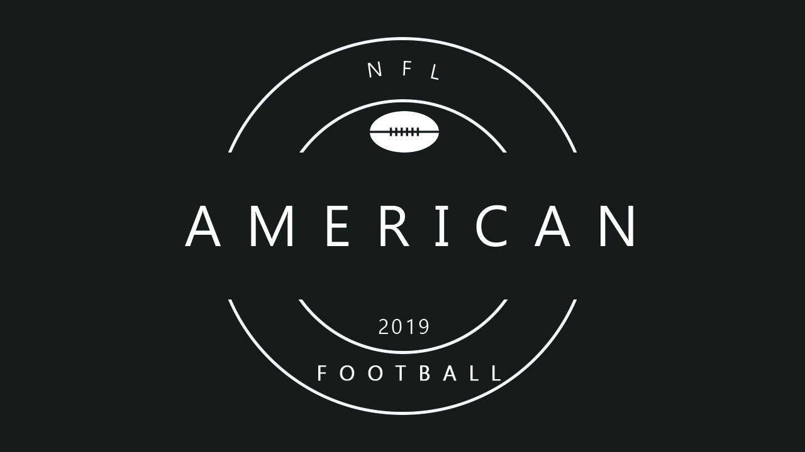

Национальная футбольная лига (НФЛ): это профессиональная лига американского футбола, состоящая из 32 команд, разделенных поровну между Национальной футбольной конференцией (NFC) и Американской футбольной конференцией (AFC). НФЛ является одной из четырех основных профессиональных спортивных лиг в Северной Америке и самым высоким профессиональным уровнем американского футбола в мире. 17-недельный регулярный сезон НФЛ длится с начала сентября до конца декабря, каждая команда играет по 16 игр. После окончания сезона 12 лучших команд играют по системе плей-офф. Финал плей-офф — Супербоул — самое популярное спортивное событие США.
НФЛ была сформирована в 1920 году как Американская профессиональная футбольная ассоциация (APFA), а затем переименовала себя в Национальную футбольную лигу сезона 1922 года. После первоначального определения чемпионов в турнирной таблице на конец сезона в 1933 году была внедрена система плей-офф, кульминацией которой стала игра чемпионата НФЛ до 1966 года. После соглашения о слиянии НФЛ с Американской футбольной лигой (АФЛ), Супербоул был впервые проведен в 1967 году для определения чемпиона между лучшими командами из двух лиг и оставался финальной игрой каждого сезона НФЛ с момента слияния в 1970 году. Сегодня НФЛ имеет самую высокую среднюю посещаемость (67 591) среди всех профессиональных спортивных лиг в мире и является самой популярной спортивной лигой в Соединенных Штатах. Супербоул также является одним из крупнейших клубных спортивных событий в мире где на отдельные игры приходится множество самых популярных телевизионных программ в истории Америки, и все они занимают 5 лучших результатов Nielsen среди самых популярных в США телевизионных трансляций в 2015 году.